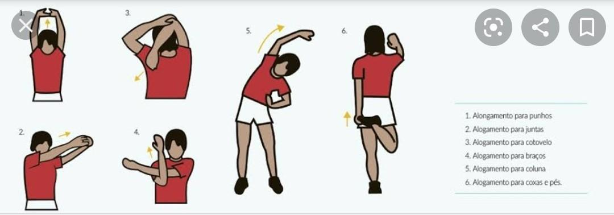

Just Dance, conhecido como o jogo de dança número um no mundo, e tendo seu maior publico mundial de brasileiros, é uma boa alternativa para quem busca fazer exercicios fisicos de forma divertida. Nesse artigo vamos tratar como usar esse jogo para uma boa sessão de treinamentos e indicando uma sequencia de musicas para uma melhor expericiencia!
Mas antes de qualquer coisa, vamos para um breve alongamento, seguindo a imagem abaixo, realize cada um desses movimentos por cerca de 10 à 15 segundos.
Usando como base o jogo Just Dance 2025, vamos montar uma playlist para sua sessão de treinamento, então para o aquecimento, vamos começar com musicas lenatas ou de baixa intensidade:
Após o aquecimento, está na hora de aumentarmos o nível com musicas de de nível moderado e uma de nível baixo ao final para mantermos o equilibrio e descansar de um treino para o outro:
Para concluir nosso treino, vamos começar a ultima sessão com 4 músicas, sendo quatro de nível alto, e uma de baixo nível. Vale ressaltar, não se preocuepe com a dificuldade, o importante é sua intensidade em execultar os passos:
E assim encerramos nossa rotina de treino, mas não podemos deixar de apontar alguns importantes cuidados pessoais como:
E assim chegamos ao fim desse artigo, aqui demos uma sugestão de treino, mas lembre-se, você pode montar da forma que bem enteder, o importante aqui é se divertir, então aproveite, se divirta e bom treino!